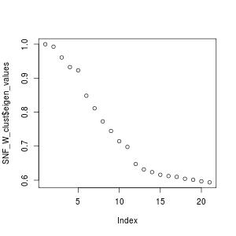
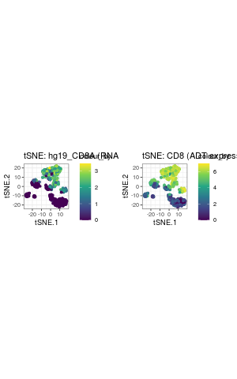
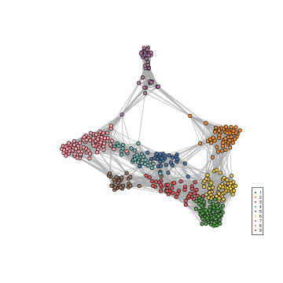
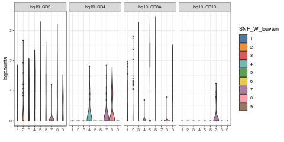
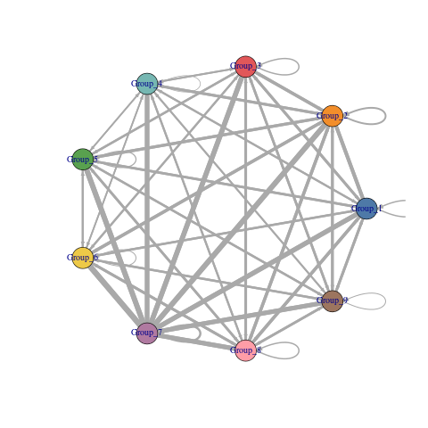

CiteFuse: getting start
CiteFuse.RmdIntroduction
CiteFuse is a computational framework that implements a suite of methods and tools for CITE-seq data from pre-processing through to integrative analytics. This includes doublet detection, network-based modality integration, cell type clustering, differential RNA and ADT expression analysis, ADT evaluation, ligand-receptor interaction analysis, and interactive web-based visualisation of the analyses. this vignette demostrates the usage of CiteFuse using a small subset data of CITE-seq data from PBMC as an example (Mimitou et al., 2019).
## [1] "RNA" "ADT" "HTO"## $RNA
## [1] 19521 500
##
## $ADT
## [1] 49 500
##
## $HTO
## [1] 4 500Here, we started from a list of three matrices of RNA, ADT and HTO, which have common cell names. The preprocessing function will utilise the three matrices and its common cell names to create a SingleCellExperiment object, which stores RNA data in assay, and ADT, HTO data in altExp slot.
## class: SingleCellExperiment
## dim: 14919 500
## metadata(0):
## assays(1): counts
## rownames(14919): hg19_AL627309.1 hg19_AL669831.5 ... hg19_MT-ND6
## hg19_MT-CYB
## rowData names(0):
## colnames(500): AAGCCGCGTTGTCTTT GATCGCGGTTATCGGT ... TTGGCAACACTAGTAC
## GCTGCGAGTTGTGGCC
## colData names(0):
## reducedDimNames(0):
## spikeNames(0):
## altExpNames(2): ADT HTO
Detecting both cross- and within-sample doublets using CiteFuse
HTO Normalisation and Visualisation
The function notmaliseExprs is used to scale the alternative expression. Here, we used it to perform log-transformation for the HTO expression, by setting transform = "log".
Then we can perform dimension reduction on the HTO expression using runTSNE or runUMAP, then use visualiseDim function to visualise the reduced dimension plot.
sce_citeseq <- scater::runTSNE(sce_citeseq,
altexp = "HTO",
name = "TSNE_HTO",
pca = TRUE)
visualiseDim(sce_citeseq,
dimNames = "TSNE_HTO") + labs(title = "tSNE (HTO)")
sce_citeseq <- scater::runUMAP(sce_citeseq,
altexp = "HTO",
name = "UMAP_HTO")
visualiseDim(sce_citeseq,
dimNames = "UMAP_HTO") + labs(title = "UMAP (HTO)")
Doublet Identification (cross sample)
We first identify the cross-sample doublets via function crossSampleDoublets.
## number of iterations= 14
## number of iterations= 17
## number of iterations= 15
## number of iterations= 325The results of the cross sample doublets are then saved in the colData as doubletClassify_between_label and doubletClassify_between_class.
##
## 1 2 3 4
## 115 121 92 129
## doublet/multiplet
## 43##
## doublet/multiplet Singlet
## 43 457We can then highlights the cross-sample doublets in our tSNE plot of HTO expression.

Further, plotHTO function allows us to plot the pairwise scatter HTO expression.

Doublet Identification (within samples)
We then identify the within-sample doublets via function withinSampleDoublets.
The results of the cross sample doublets are then saved in the colData as doubletClassify_within_label and doubletClassify_within_class.
##
## Doublets(Within)_1 Doublets(Within)_2 Doublets(Within)_3 Doublets(Within)_4
## 3 7 4 6
## NotDoublets(Within)
## 480##
## Doublet Singlet
## 20 480
Finally, we can filter out the doublets cells (Both within and between batches) for the downstream analysis.
sce_citeseq <- sce_citeseq[, sce_citeseq$doubletClassify_within_class == "Singlet" & sce_citeseq$doubletClassify_between_class == "Singlet"]
sce_citeseq## class: SingleCellExperiment
## dim: 14919 437
## metadata(3): doubletClassify_between_threshold
## doubletClassify_between_resultsMat doubletClassify_within_resultsMat
## assays(1): counts
## rownames(14919): hg19_AL627309.1 hg19_AL669831.5 ... hg19_MT-ND6
## hg19_MT-CYB
## rowData names(0):
## colnames(437): GATCGCGGTTATCGGT GGCTGGTAGAGGTTAT ... TTGGCAACACTAGTAC
## GCTGCGAGTTGTGGCC
## colData names(5): doubletClassify_between_label
## doubletClassify_between_class nUMI doubletClassify_within_label
## doubletClassify_within_class
## reducedDimNames(2): TSNE_HTO UMAP_HTO
## spikeNames(0):
## altExpNames(2): ADT HTOClustering
Performing SNF
## Calculating affinity matrix
## Performing SNF## user system elapsed
## 3.134 0.175 3.329Performing spectral clustering
## Computing Spectral Clustering
## Computing Diffusion Coordinates
## Used default value: 20 dimensions
## [1] 5## Computing Spectral Clustering
## Computing Diffusion Coordinates
## Used default value: 5 dimensionssce_citeseq$SNF_W_clust <- as.factor(SNF_W_clust$labels)
SNF_W1_clust <- spectralClustering(metadata(sce_citeseq)[["ADT_W"]], K = 5)## Computing Spectral Clustering
## Computing Diffusion Coordinates
## Used default value: 5 dimensionssce_citeseq$ADT_clust <- as.factor(SNF_W1_clust$labels)
SNF_W2_clust <- spectralClustering(metadata(sce_citeseq)[["RNA_W"]], K = 5)## Computing Spectral Clustering
## Computing Diffusion Coordinates
## Used default value: 5 dimensionsVisualisation
sce_citeseq <- reducedDimSNF(sce_citeseq, method = "tSNE", dimNames = "tSNE_joint")
g1 <- visualiseDim(sce_citeseq, dimNames = "tSNE_joint", colour_by = "SNF_W_clust") +
labs(title = "tSNE (SNF clustering)")
g2 <- visualiseDim(sce_citeseq, dimNames = "tSNE_joint", colour_by = "ADT_clust") +
labs(title = "tSNE (ADT clustering)")
g3 <- visualiseDim(sce_citeseq, dimNames = "tSNE_joint", colour_by = "RNA_clust") +
labs(title = "tSNE (RNA clustering)")
library(gridExtra)
grid.arrange(g3, g2, g1, ncol = 2)
Louvain Clustering
## SNF_W_louvain
## 1 2 3 4 5 6 7 8
## 29 39 30 36 32 130 88 53sce_citeseq$SNF_W_louvain <- as.factor(SNF_W_louvain)
visualiseDim(sce_citeseq, dimNames = "tSNE_joint", colour_by = "SNF_W_louvain") +
labs(title = "tSNE (SNF louvain clustering)")

Differential Expression Analysis
Exploration of features expression
g1 <- visualiseExprs(sce_citeseq,
plot = "boxplot",
feature_subset = c("hg19_CD2", "hg19_CD4", "hg19_CD8A", "hg19_CD19"))
g2 <- visualiseExprs(sce_citeseq,
plot = "violin",
feature_subset = c("hg19_CD2", "hg19_CD4", "hg19_CD8A", "hg19_CD19"))
g3 <- visualiseExprs(sce_citeseq,
plot = "jitter",
feature_subset = c("hg19_CD2", "hg19_CD4", "hg19_CD8A", "hg19_CD19"))
g4 <- visualiseExprs(sce_citeseq,
plot = "density",
feature_subset = c("hg19_CD2", "hg19_CD4", "hg19_CD8A", "hg19_CD19"))
library(gridExtra)
grid.arrange(g1, g2, g3, g4, ncol = 2)
sce_citeseq <- normaliseExprs(sce_citeseq, altExp_name = "ADT", transform = "log")
visualiseExprs(sce_citeseq,
altExp_name = "ADT",
n = 30)
g1 <- visualiseExprs(sce_citeseq,
altExp_name = "ADT",
plot = "violin", n = 5)
g2 <- visualiseExprs(sce_citeseq, altExp_name = "ADT",
plot = "jitter",
feature_subset = c("CD2", "CD8", "CD4", "CD19"))
g3 <- visualiseExprs(sce_citeseq, altExp_name = "ADT",
plot = "density",
feature_subset = c("CD2", "CD8", "CD4", "CD19"))
grid.arrange(g1, g2, g3, ncol = 2)
visualiseExprs(sce_citeseq, altExp_name = "ADT",
plot = "boxplot",
feature_subset = c("CD2", "CD8", "CD4", "CD19")) +
facet_wrap(~sce_citeseq$SNF_W_louvain, nrow = 7)
visualiseExprs(sce_citeseq, altExp_name = "ADT",
plot = "pairwise",
feature_subset = c("CD4", "CD8"))## number of iterations= 12
## number of iterations= 130visualiseExprs(sce_citeseq, altExp_name = "ADT",
plot = "pairwise",
feature_subset = c("CD45RA", "CD4", "CD8"), threshold = rep(4, 3))
Perform DE analysis using Wilcoxon Rank Sum test
Visualising DE results
circlepackPlot
rna_DEgenes <- lapply(rna_DEgenes, function(x){
x$name <- gsub("hg19_", "", x$name)
x
})
DEbubblePlot(list(RNA = rna_DEgenes, ADT = adt_DEgenes))
DEcomparisonPlot
rna_list <- c("hg19_CD4",
"hg19_CD8A",
"hg19_HLA-DRB1",
"hg19_ITGAX",
"hg19_NCAM1",
"hg19_CD27",
"hg19_CD19")
adt_list <- c("CD4", "CD8", "MHCII (HLA-DR)", "CD11c", "CD56", "CD27", "CD19")
feature_list <- list(RNA = rna_list, ADT = adt_list)
de_list <- list(RNA = rna_DEgenes_all, ADT = adt_DEgenes_all)
DEcomparisonPlot(de_list = de_list,
feature_list = feature_list)
ADT importance evaluation
sce_citeseq <- importanceADT(sce_citeseq,
group = sce_citeseq$SNF_W_louvain,
subsample = T)
visImportance(sce_citeseq, plot = "boxplot")

## CD27 CD8 CD4 PECAM (CD31)
## 33.975808 33.077846 32.160118 15.758429
## CD5 CD7 CD11b CD28
## 12.502951 12.493933 11.889148 11.805653
## CD2 IL7Ralpha (CD127) MHCII (HLA-DR) CD44
## 10.465394 10.313923 9.056652 8.122781
## HLA-A,B,C CD366 (tim3) CD45RA CD62L
## 6.966416 5.278447 4.967405 4.910027
## CD11c CD3 PD1 (CD279) CD69
## 4.865862 4.811810 4.373719 4.226415Select the ADT with scores greater than 5 and perform SNF again
## [1] "CD11b" "CD2" "CD27"
## [4] "CD28" "CD366 (tim3)" "CD4"
## [7] "CD44" "CD5" "CD7"
## [10] "CD8" "HLA-A,B,C" "IL7Ralpha (CD127)"
## [13] "MHCII (HLA-DR)" "PECAM (CD31)"system.time(sce_citeseq <- CiteFuse(sce_citeseq,
ADT_subset = subset_adt,
metadata_names = c("W_SNF_adtSubset1",
"W_ADT_adtSubset1",
"W_RNA"
)))## Calculating affinity matrix
## Performing SNF## user system elapsed
## 1.656 0.055 1.711## Computing Spectral Clustering
## Computing Diffusion Coordinates
## Used default value: 5 dimensionssce_citeseq$SNF_W_clust_adtSubset1 <- as.factor(SNF_W_clust_adtSubset1$labels)
library(mclust)
adjustedRandIndex(sce_citeseq$SNF_W_clust_adtSubset1, sce_citeseq$SNF_W_clust)## [1] 0.9305567Gene - ADT network
RNA_feature_subset <- unique(as.character(unlist(lapply(rna_DEgenes_all, "[[", "name"))))
ADT_feature_subset <- unique(as.character(unlist(lapply(adt_DEgenes_all, "[[", "name"))))
geneADTnetwork(sce_citeseq,
RNA_feature_subset = RNA_feature_subset,
ADT_feature_subset = ADT_feature_subset,
cor_method = "pearson",
network_layout = igraph::layout_with_fr)## IGRAPH e8393da UN-B 67 115 --
## + attr: name (v/c), label (v/c), class (v/c), type (v/l), shape (v/c),
## | color (v/c), size (v/n), label.cex (v/n), label.color (v/c), value
## | (e/n), color (e/c), weights (e/n)
## + edges from e8393da (vertex names):
## [1] RNA_hg19_RPS8 --ADT_CD27 RNA_hg19_TCF7 --ADT_CD27
## [3] RNA_hg19_RPL37 --ADT_CD27 RNA_hg19_CD27 --ADT_CD27
## [5] RNA_hg19_LTB --ADT_CD27 RNA_hg19_IL7R --ADT_CD27
## [7] RNA_hg19_RPS12 --ADT_CD27 RNA_hg19_RPL13 --ADT_CD27
## [9] RNA_hg19_RPL32 --ADT_CD27 RNA_hg19_RPL11 --ADT_CD27
## [11] RNA_hg19_CCL5 --ADT_CD27 RNA_hg19_GZMH --ADT_CD27
## + ... omitted several edgesRNA Ligand - ADT Receptor Analysis
## [,1] [,2]
## [1,] "hg19_IL17RA" "CD45"
## [2,] "hg19_FAS" "CD11b"
## [3,] "hg19_GZMK" "CD62L"
## [4,] "hg19_CD40LG" "CD11b"
## [5,] "hg19_FLT3LG" "CD62L"
## [6,] "hg19_GZMA" "CD19"sce_citeseq <- normaliseExprs(sce = sce_citeseq,
altExp_name = "ADT",
transform = "zi_minMax")
sce_citeseq <- normaliseExprs(sce = sce_citeseq,
altExp_name = "none",
exprs_value = "logcounts",
transform = "minMax")
sce_citeseq <- ligandReceptorTest(sce = sce_citeseq,
ligandReceptor_list = lr_pair_subset,
cluster = sce_citeseq$SNF_W_louvain,
RNA_exprs_value = "minMax",
altExp_name = "ADT",
altExp_exprs_value = "zi_minMax",
num_permute = 1000,
ncores = 1) ## 100 ......200 ......300 ......400 ......500 ......600 ......700 ......800 ......900 ......1000 ......



SessionInfo
## R version 3.6.1 (2019-07-05)
## Platform: x86_64-apple-darwin15.6.0 (64-bit)
## Running under: macOS Catalina 10.15.3
##
## Matrix products: default
## BLAS: /Library/Frameworks/R.framework/Versions/3.6/Resources/lib/libRblas.0.dylib
## LAPACK: /Library/Frameworks/R.framework/Versions/3.6/Resources/lib/libRlapack.dylib
##
## locale:
## [1] en_AU.UTF-8/en_AU.UTF-8/en_AU.UTF-8/C/en_AU.UTF-8/en_AU.UTF-8
##
## attached base packages:
## [1] parallel stats4 stats graphics grDevices utils datasets
## [8] methods base
##
## other attached packages:
## [1] mclust_5.4.5 gridExtra_2.3
## [3] DT_0.10 scater_1.14.4
## [5] ggplot2_3.2.1 SingleCellExperiment_1.8.0
## [7] SummarizedExperiment_1.16.0 DelayedArray_0.12.0
## [9] BiocParallel_1.20.0 matrixStats_0.55.0
## [11] Biobase_2.46.0 GenomicRanges_1.38.0
## [13] GenomeInfoDb_1.22.0 IRanges_2.20.1
## [15] S4Vectors_0.24.3 BiocGenerics_0.32.0
## [17] CiteFuse_0.1.0
##
## loaded via a namespace (and not attached):
## [1] Rtsne_0.15 ggbeeswarm_0.6.0 colorspace_1.4-1
## [4] ggridges_0.5.1 rprojroot_1.3-2 XVector_0.26.0
## [7] BiocNeighbors_1.4.1 fs_1.3.1 rstudioapi_0.10
## [10] farver_2.0.1 graphlayouts_0.5.0 ggrepel_0.8.1
## [13] RSpectra_0.16-0 splines_3.6.1 knitr_1.26
## [16] heatmap.plus_1.3 polyclip_1.10-0 zeallot_0.1.0
## [19] jsonlite_1.6 alluvial_0.1-2 pheatmap_1.0.12
## [22] uwot_0.1.4 shiny_1.4.0 ggforce_0.3.1
## [25] ExPosition_2.8.23 compiler_3.6.1 dqrng_0.2.1
## [28] prettyGraphs_2.1.6 backports_1.1.5 fastmap_1.0.1
## [31] assertthat_0.2.1 Matrix_1.2-18 lazyeval_0.2.2
## [34] limma_3.42.0 later_1.0.0 tweenr_1.0.1
## [37] BiocSingular_1.2.0 htmltools_0.4.0 tools_3.6.1
## [40] rsvd_1.0.2 igraph_1.2.4.2 gtable_0.3.0
## [43] glue_1.3.1 GenomeInfoDbData_1.2.2 reshape2_1.4.3
## [46] dplyr_0.8.3 Rcpp_1.0.3 pkgdown_1.4.1
## [49] vctrs_0.2.0 crosstalk_1.0.0 DelayedMatrixStats_1.8.0
## [52] ggraph_2.0.0 xfun_0.11 stringr_1.4.0
## [55] mime_0.7 lifecycle_0.1.0 irlba_2.3.3
## [58] statmod_1.4.32 edgeR_3.28.0 zlibbioc_1.32.0
## [61] MASS_7.3-51.4 scales_1.1.0 tidygraph_1.1.2
## [64] promises_1.1.0 rhdf5_2.30.1 RColorBrewer_1.1-2
## [67] SNFtool_2.3.0 yaml_2.2.0 memoise_1.1.0
## [70] segmented_1.0-0 stringi_1.4.3 desc_1.2.0
## [73] randomForest_4.6-14 scran_1.14.5 rlang_0.4.2
## [76] pkgconfig_2.0.3 bitops_1.0-6 evaluate_0.14
## [79] lattice_0.20-38 purrr_0.3.3 Rhdf5lib_1.8.0
## [82] labeling_0.3 htmlwidgets_1.5.1 cowplot_1.0.0
## [85] tidyselect_0.2.5 plyr_1.8.4 magrittr_1.5
## [88] R6_2.4.1 withr_2.1.2 pillar_1.4.2
## [91] mixtools_1.1.0 survival_3.1-8 RCurl_1.95-4.12
## [94] tibble_2.1.3 crayon_1.3.4 rmarkdown_1.18
## [97] viridis_0.5.1 locfit_1.5-9.1 grid_3.6.1
## [100] FNN_1.1.3 propr_4.1.6 digest_0.6.23
## [103] xtable_1.8-4 httpuv_1.5.2 tidyr_1.0.0
## [106] dbscan_1.1-5 RcppParallel_4.4.4 munsell_0.5.0
## [109] beeswarm_0.2.3 viridisLite_0.3.0 vipor_0.4.5